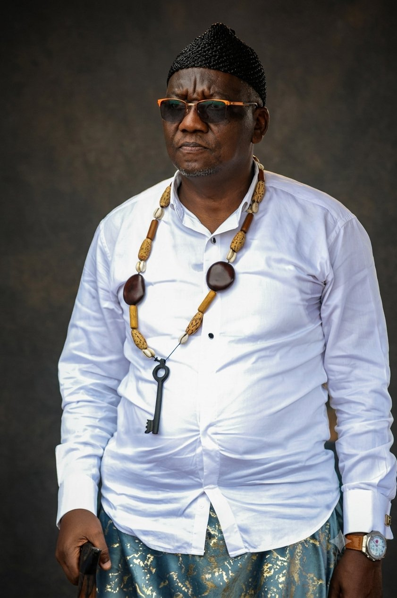
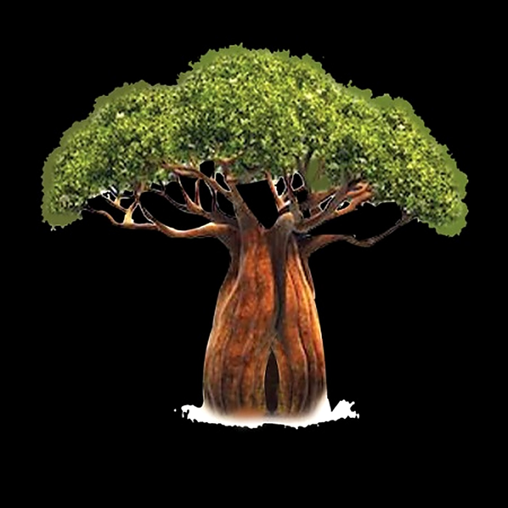
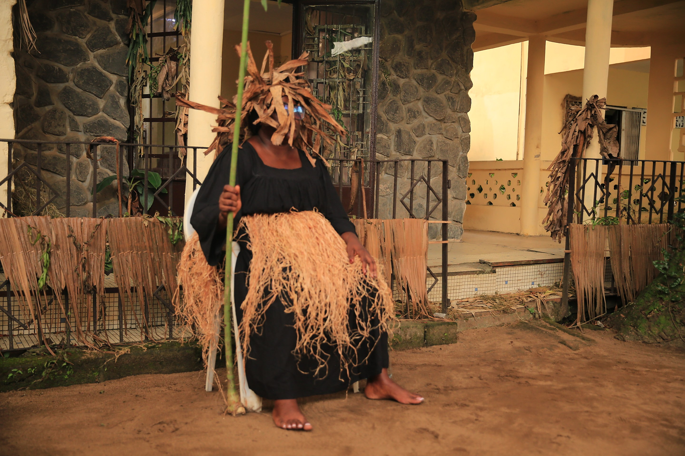

H.M. Ngalle Édouard — Superior Chief of Bodiman Canton
Settled along the Wouri-Nkam River in Cameroon's Littoral region, the Bodiman belong to the wider Sawa group and speak a language close to Ewodi and Duala. Their founder, Mbondo II Male, was nicknamed "Dima" — the wall marking the end of the river, preventing anyone from going further — hence the name Bodiman, designating his sons and descendants. After many trials and tribulations along the Wouri, this people settled permanently in the 18th century on the site it occupies today, not without conflict: at the dawn of the 19th century, two successive wars pitted them against the Ewodi, the first occupants of the riverbanks.
It was from these conflicts that the mythical forest of Koro Mabuma was born, at Mandimba: a wall of 51 sacred baobabs planted side by side, which served both as a sentry post and as an impassable border between the two communities. Located in the alluvial valley of the Nkam, downstream from Yabassi, the canton stretches along both banks of the river, from the Ndokoko falls to the confluence of the Dibombè River. Its fish-rich waters and fertile alluvial soils, suited to artisanal fishing and the cultivation of plantain, yam and citrus, make it today as much an economic site as a touristic and heritage one.
🌳 51 Sacred Baobabs

